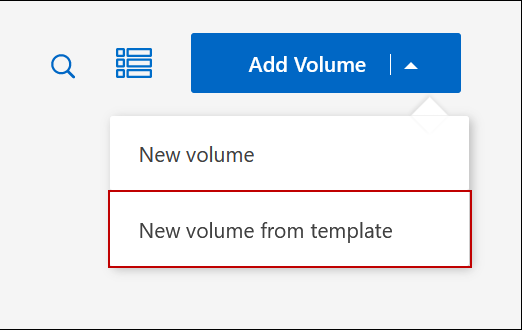
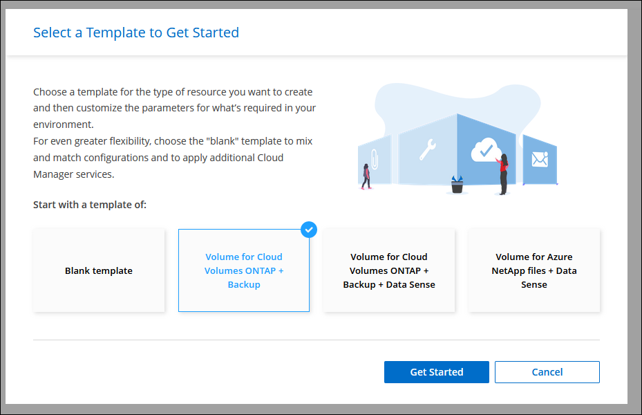

Amazon Web Services
Amazon Web Services
 Google Cloud
Google Cloud
 Microsoft Azure
Microsoft Azure
 Richiedi modifiche alla documentazione
Richiedi modifiche alla documentazione Modifica questa pagina
Modifica questa pagina Scopri come collaborare
Scopri come collaborareCreare volumi FlexVol
Collaboratori
Se hai bisogno di più storage dopo il lancio del sistema Cloud Volumes ONTAP iniziale, puoi creare nuovi volumi FlexVol per NFS, CIFS o iSCSI da BlueXP.
BlueXP offre diversi modi per creare un nuovo volume:
-
Specifica i dettagli di un nuovo volume e lascia che BlueXP gestisca gli aggregati di dati sottostanti per te. Scopri di più.
-
Crea un volume su un aggregato di dati a tua scelta. Scopri di più.
-
Creare un volume da un modello per ottimizzare il volume in base ai requisiti del carico di lavoro per determinate applicazioni, come database o servizi di streaming. Scopri di più.
-
Creare un volume sul secondo nodo in una configurazione ha. Scopri di più.
Prima di iniziare
Alcune note sul provisioning dei volumi:
-
Quando si crea un volume iSCSI, BlueXP crea automaticamente un LUN. Abbiamo semplificato la creazione di un solo LUN per volume, per cui non è necessario alcun intervento di gestione. Dopo aver creato il volume, Utilizzare IQN per connettersi al LUN dagli host.
-
È possibile creare ulteriori LUN da System Manager o dall’interfaccia CLI.
-
Se si desidera utilizzare CIFS in AWS, è necessario aver configurato DNS e Active Directory. Per ulteriori informazioni, vedere "Requisiti di rete per Cloud Volumes ONTAP per AWS".
-
Se la configurazione di Cloud Volumes ONTAP supporta la funzione Amazon EBS Elastic Volumes (volumi elastici EBS Amazon), potrebbe essere necessario "scopri di più su cosa accade quando crei un volume".
Creare un volume
Il metodo più comune per creare un volume consiste nel specificare il tipo di volume necessario e quindi BlueXP gestisce l’allocazione del disco. Tuttavia, è possibile scegliere l’aggregato specifico su cui si desidera creare il volume.
-
Dal menu di navigazione a sinistra, selezionare Storage > Canvas.
-
Nella pagina Canvas, fare doppio clic sul nome del sistema Cloud Volumes ONTAP su cui si desidera eseguire il provisioning di un volume FlexVol.
-
Creare un nuovo volume consentendo a BlueXP di gestire l’allocazione del disco o di scegliere un aggregato specifico per il volume.
La scelta di un aggregato specifico è consigliata solo se si dispone di una buona conoscenza degli aggregati di dati nel sistema Cloud Volumes ONTAP.
Qualsiasi aggregatoNella scheda Overview (Panoramica), accedere alla sezione Volumes (volumi) e fare clic su Add Volume (Aggiungi volume).
 Aggregato specifico
Aggregato specificoNella scheda aggregati, passare alla sezione aggregata desiderata. Fare clic sull’icona del menu, quindi su Add Volume (Aggiungi volume).

-
Seguire i passaggi della procedura guidata per creare il volume.
-
Volumes, Details, Protection, and Tags (volumi, Dettagli, protezione e tag): Inserire i dettagli di base sul volume e selezionare una policy Snapshot.
Alcuni dei campi di questa pagina sono esplicativi. Il seguente elenco descrive i campi per i quali potrebbe essere necessario fornire assistenza:
Campo Descrizione Volume Name (Nome volume)
Il nome identificabile che è possibile inserire per il nuovo volume.
Volume Size (dimensione volume)
Le dimensioni massime che è possibile inserire dipendono in gran parte dall’attivazione o meno del thin provisioning, che consente di creare un volume più grande dello storage fisico attualmente disponibile per l’IT.
Tag
I tag aggiunti a un volume vengono associati a "Servizio modelli di applicazione", che consente di organizzare e semplificare la gestione delle risorse.
Storage VM (SVM)
Una VM di storage è una macchina virtuale in esecuzione in ONTAP che fornisce servizi di storage e dati ai client. Questo potrebbe essere conosciuto come SVM o vserver. Cloud Volumes ONTAP è configurato con una VM di storage per impostazione predefinita, ma alcune configurazioni supportano altre VM di storage. È possibile specificare la Storage VM per il nuovo volume.
Policy di Snapshot
Una policy di copia Snapshot specifica la frequenza e il numero di copie Snapshot NetApp create automaticamente. Una copia Snapshot di NetApp è un’immagine del file system point-in-time che non ha alcun impatto sulle performance e richiede uno storage minimo. È possibile scegliere il criterio predefinito o nessuno. È possibile scegliere nessuno per i dati transitori, ad esempio tempdb per Microsoft SQL Server.
-
Protocol (protocollo): Scegliere un protocollo per il volume (NFS, CIFS o iSCSI) e fornire le informazioni richieste.
Se si seleziona CIFS e un server non è configurato, BlueXP richiede di impostare la connettività CIFS dopo aver fatto clic su Avanti.
Le sezioni seguenti descrivono i campi per i quali potrebbe essere necessario fornire assistenza. Le descrizioni sono organizzate in base al protocollo.
NFS- Controllo degli accessi
-
Scegliere un criterio di esportazione personalizzato per rendere il volume disponibile ai client.
- Policy di esportazione
-
Definisce i client nella subnet che possono accedere al volume. Per impostazione predefinita, BlueXP inserisce un valore che fornisce l’accesso a tutte le istanze della subnet.
CIFS- Permessi e utenti/gruppi
-
Consente di controllare il livello di accesso a una condivisione SMB per utenti e gruppi (detti anche elenchi di controllo degli accessi o ACL). È possibile specificare utenti o gruppi Windows locali o di dominio, utenti o gruppi UNIX. Se si specifica un nome utente Windows di dominio, è necessario includere il dominio dell’utente utilizzando il formato dominio/nome utente.
- Indirizzo IP primario e secondario DNS
-
Gli indirizzi IP dei server DNS che forniscono la risoluzione dei nomi per il server CIFS. I server DNS elencati devono contenere i record di posizione del servizio (SRV) necessari per individuare i server LDAP di Active Directory e i controller di dominio per il dominio a cui il server CIFS si unisce.
- Dominio Active Directory da unire
-
L’FQDN del dominio Active Directory (ad) a cui si desidera che il server CIFS si unisca.
- Credenziali autorizzate per l’accesso al dominio
-
Il nome e la password di un account Windows con privilegi sufficienti per aggiungere computer all’unità organizzativa (OU) specificata nel dominio ad.
- Nome NetBIOS del server CIFS
-
Un nome server CIFS univoco nel dominio ad.
- Unità organizzativa
-
L’unità organizzativa all’interno del dominio ad da associare al server CIFS. L’impostazione predefinita è CN=computer.
-
Per configurare AWS Managed Microsoft ad come server ad per Cloud Volumes ONTAP, immettere OU=computer,OU=corp in questo campo.
-
- Dominio DNS
-
Il dominio DNS per la SVM (Storage Virtual Machine) di Cloud Volumes ONTAP. Nella maggior parte dei casi, il dominio è lo stesso del dominio ad.
- Server NTP
-
Selezionare Use Active Directory Domain (Usa dominio Active Directory) per configurare un server NTP utilizzando il DNS di Active Directory. Se è necessario configurare un server NTP utilizzando un indirizzo diverso, utilizzare l’API. Vedere "Documenti sull’automazione BlueXP" per ulteriori informazioni.
Nota: È possibile configurare un server NTP solo quando si crea un server CIFS. Non è configurabile dopo aver creato il server CIFS.
- LUN
-
Le destinazioni di storage iSCSI sono denominate LUN (unità logiche) e vengono presentate agli host come dispositivi a blocchi standard. Quando si crea un volume iSCSI, BlueXP crea automaticamente un LUN. Abbiamo semplificato la creazione di un solo LUN per volume, per cui non è prevista alcuna gestione. Dopo aver creato il volume, "Utilizzare IQN per connettersi al LUN dagli host".
- Gruppo iniziatore
-
i gruppi di iniziatori (igroups) specificano quali host possono accedere a LUN specifiche sul sistema di storage
- Iniziatore host (IQN)
-
Le destinazioni iSCSI si collegano alla rete tramite schede di rete Ethernet standard (NIC), schede TOE (TCP offload Engine) con iniziatori software, adattatori di rete convergenti (CNA) o adattatori host busto dedicati (HBA) e sono identificate da nomi qualificati iSCSI (IQN).
-
Disk Type (tipo di disco): Scegliere un tipo di disco sottostante per il volume in base alle esigenze di performance e ai requisiti di costo.
-
-
Profilo di utilizzo e policy di tiering: Scegliere se attivare o disattivare le funzionalità di efficienza dello storage sul volume, quindi selezionare un "policy di tiering dei volumi".
ONTAP include diverse funzionalità di efficienza dello storage che consentono di ridurre la quantità totale di storage necessaria. Le funzionalità di efficienza dello storage NetApp offrono i seguenti vantaggi:
- Thin provisioning
-
Presenta uno storage logico maggiore per gli host o gli utenti rispetto al pool di storage fisico. Invece di preallocare lo spazio di storage, lo spazio di storage viene allocato dinamicamente a ciascun volume durante la scrittura dei dati.
- Deduplica
-
Migliora l’efficienza individuando blocchi di dati identici e sostituendoli con riferimenti a un singolo blocco condiviso. Questa tecnica riduce i requisiti di capacità dello storage eliminando blocchi di dati ridondanti che risiedono nello stesso volume.
- Compressione
-
Riduce la capacità fisica richiesta per memorizzare i dati comprimendo i dati all’interno di un volume su storage primario, secondario e di archivio.
-
Revisione: Esaminare i dettagli relativi al volume, quindi fare clic su Aggiungi.
BlueXP crea il volume sul sistema Cloud Volumes ONTAP.
Creare un volume da un modello
Se l’organizzazione ha creato modelli di volume Cloud Volumes ONTAP in modo da poter implementare volumi ottimizzati per i requisiti di carico di lavoro per determinate applicazioni, seguire la procedura descritta in questa sezione.
Il modello dovrebbe semplificare il tuo lavoro perché alcuni parametri di volume saranno già definiti nel modello, come tipo di disco, dimensione, protocollo, policy di snapshot, provider di cloud, e molto altro ancora. Quando un parametro è già predefinito, è sufficiente passare al parametro di volume successivo.

|
È possibile creare volumi NFS o CIFS solo quando si utilizzano modelli. |
-
Dal menu di navigazione a sinistra, selezionare Storage > Canvas.
-
Nella pagina Canvas, fare clic sul nome del sistema Cloud Volumes ONTAP su cui si desidera eseguire il provisioning di un volume.
-
Accedere alla scheda Volumes (volumi) e fare clic su Add Volume (Aggiungi volume) > New Volume from Template (nuovo volume da modello).

-
Nella pagina Select Template, selezionare il modello che si desidera utilizzare per creare il volume e fare clic su Next (Avanti).

Viene visualizzata la pagina Editor.

-
Sopra il pannello Action, inserire un nome per il modello.
-
In contesto, l’ambiente di lavoro viene compilato con il nome dell’ambiente di lavoro con cui hai iniziato. Selezionare la Storage VM in cui verrà creato il volume.
-
Aggiungere valori per tutti i parametri non codificati dal modello. Vedere Creare un volume Per informazioni dettagliate su tutti i parametri necessari per completare la distribuzione di un volume Cloud Volumes ONTAP.
-
Fare clic su Apply (Applica) per salvare i parametri configurati nell’azione selezionata.
-
Se non sono presenti altre azioni da definire (ad esempio, configurazione del backup e ripristino di BlueXP), fare clic su Save Template (Salva modello).
Se sono presenti altre azioni, fare clic sull’azione nel riquadro sinistro per visualizzare i parametri da completare.

Ad esempio, se l’azione Enable Cloud Backup on Volume (Abilita backup cloud su volume) richiede di selezionare un criterio di backup, è possibile farlo ora.
-
Una volta completata la configurazione per le azioni del modello, fare clic su Save Template (Salva modello).
Cloud Volumes ONTAP esegue il provisioning del volume e visualizza una pagina in modo da visualizzare l’avanzamento.

Inoltre, se nel modello viene implementata un’azione secondaria, ad esempio l’attivazione del backup e ripristino BlueXP sul volume, viene eseguita anche tale azione.
Creare un volume sul secondo nodo in una configurazione ha
Per impostazione predefinita, BlueXP crea volumi sul primo nodo in una configurazione ha. Se è necessaria una configurazione Active-Active, in cui entrambi i nodi servono i dati ai client, è necessario creare aggregati e volumi sul secondo nodo.
-
Dal menu di navigazione a sinistra, selezionare Storage > Canvas.
-
Nella pagina Canvas, fare doppio clic sul nome dell’ambiente di lavoro Cloud Volumes ONTAP su cui si desidera gestire gli aggregati.
-
Nella scheda aggregati, fare clic su Aggiungi aggregato.
-
Dalla schermata Add aggregate, creare l’aggregato.

-
Per nodo principale, scegliere il secondo nodo della coppia ha.
-
Una volta creato l’aggregato, selezionarlo e fare clic su Create volume (Crea volume).
-
Inserire i dettagli del nuovo volume, quindi fare clic su Create (Crea).
BlueXP crea il volume sul secondo nodo della coppia ha.

|
Per le coppie ha implementate in più zone di disponibilità AWS, è necessario montare il volume sui client utilizzando l’indirizzo IP mobile del nodo su cui risiede il volume. |
Dopo aver creato un volume
Se è stata fornita una condivisione CIFS, assegnare agli utenti o ai gruppi le autorizzazioni per i file e le cartelle e verificare che tali utenti possano accedere alla condivisione e creare un file.
Se si desidera applicare le quote ai volumi, è necessario utilizzare System Manager o la CLI. Le quote consentono di limitare o tenere traccia dello spazio su disco e del numero di file utilizzati da un utente, un gruppo o un qtree.